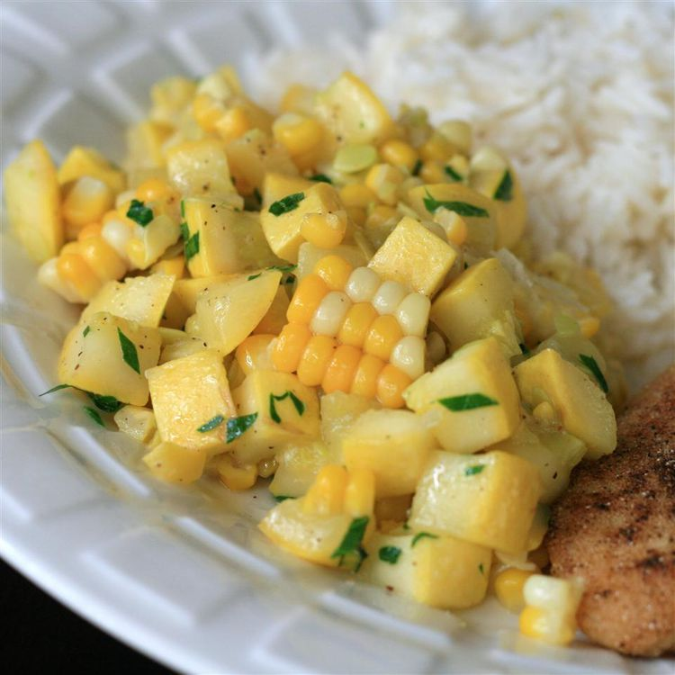

Yellow Squash and Corn Sauté

"Description"
Yellow Squash and Corn Sauté is a quick dish made by sautéing sliced yellow squash and fresh corn kernels with garlic, onions, and herbs in olive oil or butter until tender and lightly golden.
"Ingridients"
- 2 ears corn, husked and cleaned
- 2 yellow squash, diced
- ½ cup water
- 2 tablespoons butter, or more to taste
- 1 tablespoon chopped fresh parsley (Optional)
- salt and ground black pepper to taste
"Steps"
- Place corn into a large pot and cover with salted water; bring to a boil. Reduce the heat to medium-low and simmer until tender, 10 to 15 minutes. Drain and set aside to cool.
- While the corn is cooling, place squash into a skillet and add water. Cook over medium heat until tender, 5 to 10 minutes. Drain any excess water from the skillet.
- Drain and cool corn. Cut kernels off the cobs. Stir corn, butter, parsley, salt, and pepper into squash; cook, stirring occasionally, until heated through, about 5 minutes.
Home page